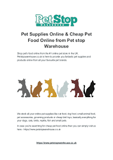

Home PetMart About Us Contact Us
 ThePetshop operates an online pet shop store selling animal food, vitamins, accessories and grooming products. The company started 2003 as a small pet shop to sell quality freshwater fish to the Filipino hobbyist. The product line had expanded to include a number of products used in wholesale and retail such as dogs and cats feeds and accessories. Today, the company is one of the biggest whosale and retail stores of animal products carrying quality brands. Its online business sites launched in the 3rd quarter of 2016 to accommodate the growing population of loyal and new customers who prefer to purchase via online. ThePetshop operates an online pet shop store selling animal food, vitamins, accessories and grooming products. The company started 2003 as a small pet shop to sell quality freshwater fish to the Filipino hobbyist. The product line had expanded to include a number of products used in wholesale and retail such as dogs and cats feeds and accessories. Today, the company is one of the biggest whosale and retail stores of animal products carrying quality brands. Its online business sites launched in the 3rd quarter of 2016 to accommodate the growing population of loyal and new customers who prefer to purchase via online. ThePetshop operates an online pet shop store selling animal food, vitamins, accessories and grooming products. The company started 2003 as a small pet shop to sell quality freshwater fish to the Filipino hobbyist. The product line had expanded to include a number of products used in wholesale and retail such as dogs and cats feeds and accessories. Today, the company is one of the biggest whosale and retail stores of animal products carrying quality brands. Its online business sites launched in the 3rd quarter of 2016 to accommodate the growing population of loyal and new customers who prefer to purchase via online.